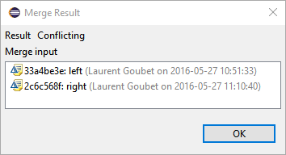

EMF Compare acceptance tests
- EMF Compare acceptance tests
- Local comparisons - two way
- Plain ecore files with cross-resource references
- Ecore files without identifiers
- Ecore files with identifiers
- Local comparisons - three way
- Ecore files without identifiers - no conflict
- Ecore files without identifiers - conflicts
- Ecore files with identifiers - no conflict
- Ecore files with identifiers - conflicts
- Git comparisons
- Ecore comparison without identifiers
- Ecore comparison with identifiers
- UML Comparison without stereotypes
- UML Comparison with stereotypes
- UML Designer Comparison
Local comparisons – two way
Plain ecore files with cross-resource references
- Import project testLocalCrossReference
- Compare model1/My.ecore and model2/My.ecore with each other
- Expected: 7 differences, two of which cascading, as follows:
- merge all from left to right
- Expected: identical models. comparing them again should yield 0 differences
- replace model2/My.ecore with HEAD
- Expected: a popup shows to tell that both My.ecore and types.ecore are to be replaced with HEAD. Accepting on that popup resets the whole repository (no changes in any file).
- Compare model1/My.ecore and model2/My.ecore with each other
- Expected: Same 7 differences as for the first step
- merge all right to left
- Expected: identical models. comparing them again should yield 0 differences
Ecore files without identifiers
- Import project testLocalExtLibrary
- Compare model1/extlibraryLeft.ecore and model2/extlibraryRight.ecore with each other
- Expected: 30 differences, 9 of which cascading, as follows:
- merge all from left to right
- Expected: identical models. comparing them again should yield 0 differences
- replace model2/extlibraryRight.ecore with HEAD
- Expected: no more changes waiting to be staged/commited on any file of this repository
- Compare model1/extlibraryLeft.ecore and model2/extlibraryRight.ecore with each other
- Expected: Same 30 differences as for the first step
- merge all right to left
- Expected: identical models. comparing them again should yield 0 differences
Ecore files with identifiers
- Import project testLocalExtLibraryID
- Compare model1/extlibraryLeft.ecore and model2/extlibraryRight.ecore with each other
- Expected: 36 differences, 18 of which cascading, as follows:
- merge all from left to right
- Expected: identical models. comparing them again should yield 0 differences
- replace model2/extlibraryRight.ecore with HEAD
- Expected: no more changes waiting to be staged/commited on any file of this repository
- Compare model1/extlibraryLeft.ecore and model2/extlibraryRight.ecore with each other
- Expected: Same 30 differences as for the first step
- merge all right to left
- Expected: identical models. comparing them again should yield 0 differences
Local comparisons – three way
Ecore files without identifiers – no conflict
- Import project testLocalExtLibraryThreeWay
- Compare extlibraryLeft.ecore, extlibraryRight.ecore and extlibraryOrigin.ecore with each other. Select extlibraryOrigin as the common ancestor.
- Expected: 30 differences, 9 of which cascading, as follows:
- merge all from left to right
- Expected: nothing is merged. All of our 30 differences originate from the right, so this command shouldn’t do any action.
- PENDING : even though this command doesn’t change anything in our models, it is still marked as dirty. Bug 495875.
- Compare extlibraryLeft.ecore, extlibraryRight.ecore and extlibraryOrigin.ecore with each other. Select extlibraryOrigin as the common ancestor.
- Expected: Same 30 differences as for the first step
- merge all right to left
- Expected: identical models. comparing them again should yield 0 differences
Ecore files without identifiers – conflicts
- Import project testLocalExtLibraryThreeWayConflicts
- Compare extlibraryLeft.ecore, extlibraryRight.ecore and extlibraryOrigin.ecore with each other. Select extlibraryOrigin as the common ancestor.
- Expected: 42 differences, 9 of which cascading, as follows:
- Merge all from left to right
- Expected: Only the conflict on «title» is touched, one of its diffs marked as merged. All differences from the left are marked as merged. After saving the comparison though, all conflicts reappear pristine even the one on title, along with two of the left differences as shown on the screenshot below.
- PENDING : Some differences are marked as merged even though they really aren’t. The expectation above takes that into account. See bug 496174. Once solved, the expectation will be that after the merge all left to right, no diff from the left side is left in the model.
- Compare the models with each other and merge the left-originating differences from left to right until none remains.
- Compare the models with each other.
- Expected: There should now be 55 differences, most of them hidden from view as pseudo conflicts (since we merged from left to right, but the ancestor doesn’t change, everything we merged is now a pseudo conflict).
- Iterate over the non-conflicting differences and merge them from left to right (reject them)
- Expected: only three conflicts remain

- Resolve all conflicts by accepting the «left-originating» differences, such that only the right model gets modified.
- Expected: all «right-originating» differences from these conflicts get automatically rejected in the process, no difference remains between the models.
- Comparing the three models again should present zero «visible» differences to the user. 38 differences are hidden from view as pseudo conflicts.
- Comparing «left» and «right» models with each other should tell the user that there are no differences between the two files, hidden or visible.
- Repeat these same steps while merging from right to left and make sure we end up with two identical models for left and right, with only the left modified.
Ecore files with identifiers – no conflict
- Import project testLocalExtLibraryIDThreeWay
- Compare extlibraryLeft.ecore, extlibraryRight.ecore and extlibraryOrigin.ecore with each other. Select extlibraryOrigin as the common ancestor.
- Expected: 36 differences, 18 of which cascading, as follows:
- merge all from left to right
- Expected: nothing is merged. All of our 36 differences originate from the right, so this command shouldn’t do any action.
- PENDING : even though this command doesn’t change anything in our models, it is still marked as dirty. Bug 495875.
- Compare extlibraryLeft.ecore, extlibraryRight.ecore and extlibraryOrigin.ecore with each other. Select extlibraryOrigin as the common ancestor.
- Expected: Same 36 differences as for the first step
- merge all right to left
- Expected: identical models. Comparing them again should yield 0 differences
Ecore files with identifiers – conflicts
- Import project testLocalExtLibraryIDThreeWayConflicts
- Compare extlibraryLeft.ecore, extlibraryRight.ecore and extlibraryOrigin.ecore with each other. Select extlibraryOrigin as the common ancestor.
- Expected: 46 differences, 21 of which cascading, as follows:
- Merge all from left to right
- Expected: All the differences coming from the left side are merged, only the conflicts and differences originating from the right side remain.
- There should now be 63 differences, most of them hidden from view as pseudo conflicts (since we merged from left to right, but the ancestor doesn’t change, everything we merged previously is now a pseudo conflict).
- Iterate over the non-conflicting differences and merge them from left to right (reject them)
- Expected: only two conflicts remain (the conflict on Periodical has been solved as a by-product of one of our right differences rejection)
- Resolve all conflicts by accepting the «left-originating» differences, such that only the right model gets modified.
- Expected: all «right-originating» differences from these conflicts get automatically rejected in the process, no difference remains between the models.
- Comparing the three models again should present zero «visible» differences to the user. 48 differences are hidden from view as pseudo conflicts.
- Comparing «left» and «right» models with each other should tell the user that there are no differences between the two files, hidden or visible.
- Repeat these same steps while merging from right to left and make sure we end up with two identical models for left and right, with only the left modified.
Git comparisons
Ecore comparison without identifiers
- Import project testGitExtLibrary
- Make sure it’s on branch master
Compare and accept changes
- Compare extlibrary.ecore with «branch, Tag or Reference», and select «right» as the revision to compare to.
- Expected: 41 differences, 9 of which hiddden from view as follows:
- Accept all non-conflicting differences
- Expected: All the differences are merged, and the conflict on «title» is resolved as a side effect.
- Note that even though they’ve been accepted, the differences originating from the left side will be there again once we re-compare the files, which is expected.
- The conflict between the deletion of «minutesLength» from the right and its renaming to «length» on the left disappears when we re-compare even though it hasn’t been solved. This is expected: we’re not using identifiers in these models, so «minutesLength» will be matched with «minutes» after we’ve accepted all differences.
- Solve the conflicts by accepting all left-originating differences (thus rejecting the ones from the right side)
- Expected: All three conflicts reappear after saving and re-comparing (since we cannot edit the «right» side, our accepting actions had no lasting effect)
- Solve the conflicts by accepting all right-originating differences (thus rejecting the ones from the left side)
- Expected: All conflicts solved, all differences originating from the remote (right) side gone. The only differences left in the model are changed made in the local (left) version. The model loads properly without failures.
Compare and reject changes
- Replace extlibrary.ecore with its «HEAD revision» version. This should reset the repository to its original state (no modifications in local files)
- Compare extlibrary.ecore with «branch, Tag or Reference», and select «right» as the revision to compare to.
- Expected: same 41 differences as in the first step above.
- Reject all non-conflicting differences
- Expected: All but three of the left-originating diffs are rejected, all diffs from the right side are marked as rejected.
- The three left differences that are not merged from that action are ignored because they are «under» real conflicts (their containers' deletion). The merge all action ignores such difference trees since merging them would mean solving a conflict.
- Iterate over the remaining three left-originating differences and reject them.
- Only the conflicts and differences from the right side remain to be merged. The local extlibrary.ecore loads without errors.
- Note that the conflicts on Periodical and lastName are solved by our rejecting of these three local differences as they depend on those conflicts.
- Replace extlibrary.ecore with its «HEAD revision» version. This should reset the repository to its original state (no modifications in local files)
- Ensure the git preference for synchronization is set to use the recursive model strategy for merges.

- Open the history view for this project, and make sure all branches are shown.
- Right-click the «right» commit and use the «merge» action.
- Expected: a dialog pops up to warn that there are conflicts in the merge
- The file is marked as conflicting in the workspace (conflict decorator on extlibrary.ecore) and in the staging view.
- The merge tool is available on the file.
- Use the merge tool (with EMF Compare) on either extlibrary.ecore or its project.
- Expected: the comparison editor opens and shows the same 41 differences as seen in the previous two sections.
Ecore comparison with identifiers
- Import project testGitExtLibraryID
- Make sure it’s on branch master
Compare and accept changes
- Compare extlibrary.ecore with «branch, Tag or Reference», and select «right» as the revision to compare to.
- Expected: 46 differences, 21 of which hiddden from view as follows:
- Accept all non-conflicting differences
- Expected: All the differences are merged.
- Note that even though they’ve been accepted, the differences originating from the left side will be there again once we re-compare the files, which is expected.
- Solve the conflicts by accepting all left-originating differences (thus rejecting the ones from the right side)
- Expected: All three conflicts reappear after saving and re-comparing (since we cannot edit the «right» side, our accepting actions had no lasting effect)
- Solve the conflicts by accepting all right-originating differences (thus rejecting the ones from the left side)
- Expected: All conflicts solved, all differences originating from the remote (right) side gone. The only differences left in the model are changed made in the local (left) version. The model loads properly without failures.
Compare and reject changes
- Replace extlibrary.ecore with its «HEAD revision» version. This should reset the repository to its original state (no modifications in local files)
- Compare extlibrary.ecore with «branch, Tag or Reference», and select «right» as the revision to compare to.
- Expected: same 46 differences as in the first step above.
- Reject all non-conflicting differences
- Expected: All but three of the left-originating diffs are rejected, all diffs from the right side are marked as rejected.
- The three left differences that are not merged from that action are ignored because they are «under» real conflicts (their containers' deletion). The merge all action ignores such difference trees since merging them would mean solving a conflict.
- Iterate over the remaining three left-originating differences and reject them.
- Only the conflicts and differences from the right side remain to be merged. The local extlibrary.ecore loads without errors.
- Note that the conflicts on Periodical and lastName are solved by our rejecting of these three local differences as they depend on those conflicts.
- Replace extlibrary.ecore with its «HEAD revision» version. This should reset the repository to its original state (no modifications in local files)
- Ensure the git preference for synchronization is set to use the recursive model strategy for merges.
- Open the history view for this project, and make sure all branches are shown.
- Right-click the «right» commit and use the «merge» action.
- Expected: a dialog pops up to warn that there are conflicts in the merge
- The file is marked as conflicting in the workspace (conflict decorator on extlibrary.ecore) and in the staging view.
- The merge tool is available on the file.
- Use the merge tool (with EMF Compare) on either extlibrary.ecore or its project.
- Expected: the comparison editor opens and shows the same 46 differences as seen in the previous two sections.
UML Comparison without stereotypes
- Import project testGitUML
- Make sure it’s on branch master
Compare and accept changes
- Compare agency.uml with «branch, Tag or Reference», and select «right» as the revision to compare to.
- Expected: 72 differences, 52 of which hiddden from view as follows:
- Accept all non-conflicting differences
- Expected: All the differences are merged.
- Note that even though they’ve been accepted, the differences originating from the left side will be there again once we re-compare the files, which is expected.
- Solve the conflict by accepting the left-originating difference (thus rejecting the one from the right side)
- Expected: The conflict reappear after saving and re-comparing (since we cannot edit the «right» side, our accepting actions had no lasting effect)
- Solve the conflict by accepting the right-originating difference (thus rejecting the one from the left side)
- Expected: All differences originating from the remote (right) side gone. The only differences left in the model are changed made in the local (left) version. The model loads properly without failures.
Compare and reject changes
- Replace agency.uml with its «HEAD revision» version. This should reset the repository to its original state (no modifications in local files)
- Compare agency.uml with «branch, Tag or Reference», and select «right» as the revision to compare to.
- Expected: same 72 differences as in the first step above.
- Reject all non-conflicting differences
- Expected: All but three of the left-originating diffs are rejected, all diffs from the right side are marked as rejected.
- Iterate over the remaining three left-originating differences and reject them.
- Only the conflict and differences from the right side remain to be merged. The local agency.uml loads without errors.
- Replace agency.uml with its «HEAD revision» version. This should reset the repository to its original state (no modifications in local files)
- Ensure the git preference for synchronization is set to use the recursive model strategy for merges.
- Open the history view for this project, and make sure all branches are shown.
- Right-click the «right» commit and use the «merge» action.
- Expected: a dialog pops up to warn that there are conflicts in the merge
- The file is marked as conflicting in the workspace (conflict decorator on agency.uml) and in the staging view.
- The merge tool is available on the file.
- Use the merge tool (with EMF Compare) on either agency.uml or its project.
- Expected: the comparison editor opens and shows the same 72 differences as seen in the previous two sections.
UML Comparison with stereotypes
- Import project testGitUMLStereotyped
- Make sure it’s on branch master
Compare and accept changes
- Compare agency.uml with «branch, Tag or Reference», and select «right» as the revision to compare to.
- Expected: 73 differences, 61 of which hiddden from view as follows:
- Accept all non-conflicting differences
- Expected: All the differences are merged.
- Note that even though they’ve been accepted, the differences originating from the left side will be there again once we re-compare the files, which is expected.
- Solve the conflicts by accepting the left-originating differences (thus rejecting the ones from the right side)
- Expected: The conflict reappear after saving and re-comparing (since we cannot edit the «right» side, our accepting actions had no lasting effect)
- Solve the conflict by accepting the right-originating difference (thus rejecting the one from the left side)
- Expected: All differences originating from the remote (right) side gone. The only differences left in the model are changed made in the local (left) version. The model loads properly without failures.
Compare and reject changes
- Replace agency.uml with its «HEAD revision» version. This should reset the repository to its original state (no modifications in local files)
- Compare agency.uml with «branch, Tag or Reference», and select «right» as the revision to compare to.
- Expected: same 73 differences as in the first step above.
- Reject all non-conflicting differences
- Expected: All the left-originating diffs are rejected, all diffs from the right side are marked as rejected.
- Replace agency.uml with its «HEAD revision» version. This should reset the repository to its original state (no modifications in local files)
- Ensure the git preference for synchronization is set to use the recursive model strategy for merges.
- Open the history view for this project, and make sure all branches are shown.
- Right-click the «right» commit and use the «merge» action.
- Expected: a dialog pops up to warn that there are conflicts in the merge

- The file is marked as conflicting in the workspace (conflict decorator on agency.uml) and in the staging view.
- The merge tool is available on the file.
- Use the merge tool (with EMF Compare) on either agency.uml or its project.
- Expected: the comparison editor opens and shows the same 73 differences as seen in the previous two sections.
UML Designer Comparison
- Import project TravelAgency
- Make sure it’s on branch master
- Compare agency.uml with «Branch, Tag or Reference» and select «right» as the revision to compare to.
- Expected: the comparison editor doesn’t open. The synchronization view is shown instead and decorators indicate that both agency.uml and representations.aird have conflicts.
- Double-click agency.uml
- Expected: the comparison editor opens and shows 2112 differences, 1760 hidden from view
- Check that double clicking on «sirius element» differences properly show diagrams in the content panels.
- Close the comparison editor
- Open agency.uml, right-click the TravelAgency model and use new Child > Packaged Element > Class
- Save the model
- Right-click agency.uml and use Replace with > HEAD revision
- Expected: a dialog pops up to tell the user that two files need to be modified by this operation, including representations.aird in addition to agency.uml.
- PENDING: The merge fails pretty badly on sirius elements for now (on this particular model, using «accept all» will end up duplicating all representations for example). We cannot test that part.